Report Q1
Contents
Init
tic phantom = imread('../data/SheppLogan256.png'); theta = 0:3:177; mx = 256; [oR, xp] = radon(phantom, theta); unfiltered = iradon(oR,theta,'linear','none'); %unfiltered backprojection figure; imshow(phantom,[]); title("Phantom Image"); figure; imshow(unfiltered,[]); title("Unfiltered Backprojection"); runa = 1; runb = 1; runc = 1;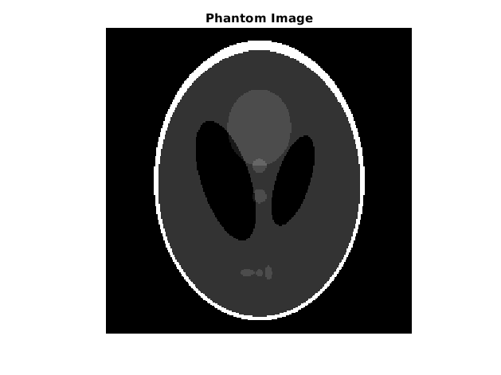 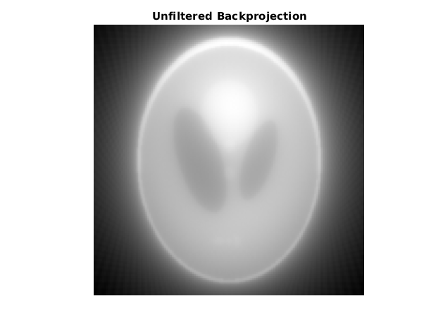
Part a
if runa == 1 for L = [1,0.5] for flt = ["Ram-Lak", "Shepp-Logan", "Cosine"] filtered = flt_bp(oR, xp, theta, L, flt, mx); figure; imshow(filtered,[]); title(flt + " L = " + L); end end end
Justification
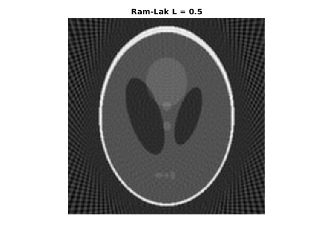For 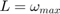:
Ram-Lak: There are Artifacts in backgraound and the phantom is grainy , because the projectios were taken only along 60 angles at an interval 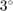. These artifacts are due to high frequency coponents in the Radon Tranform
Shepp-Logan: The artifacts are slighly less prominent as lesser weightage is given to high frequencies as compared to the Ram-Lak filter.
Cosine: Artifacts are significantly reduced as much lesser weightage is given to higher frequencies.
For 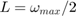
Ram-Lak: The artifcats are significantly reduced as the higher frequencies are cut off, but this also leads to blurring at the boundaries
Shepp-Logan: Artifacts redued, blurring increases, same as above
Cosine: Artifacts are greatly reduced, significant blurring as frequencies are cut off and higher frequencies are not given very less weightage
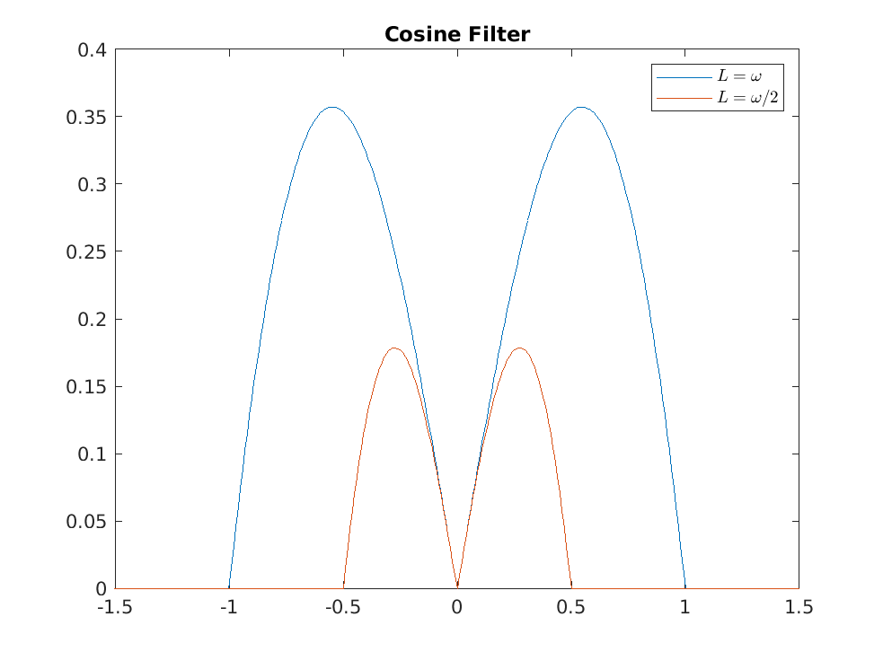
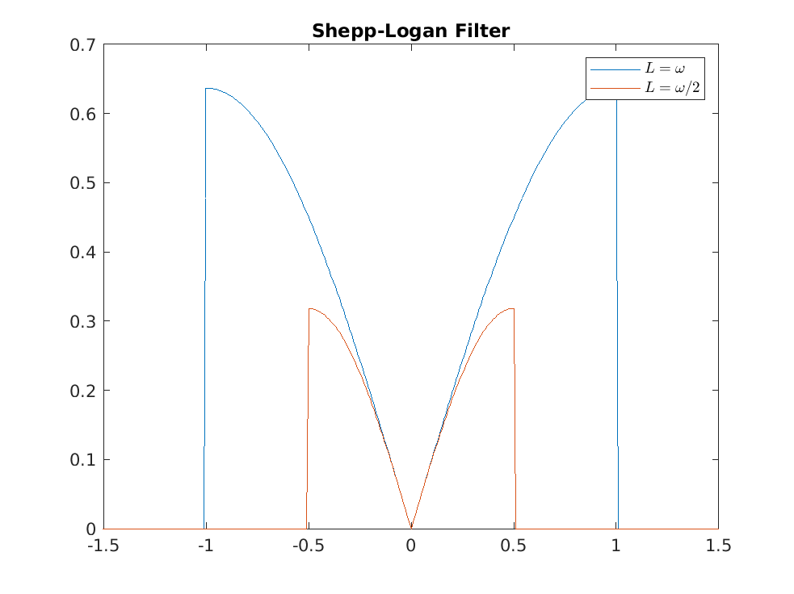
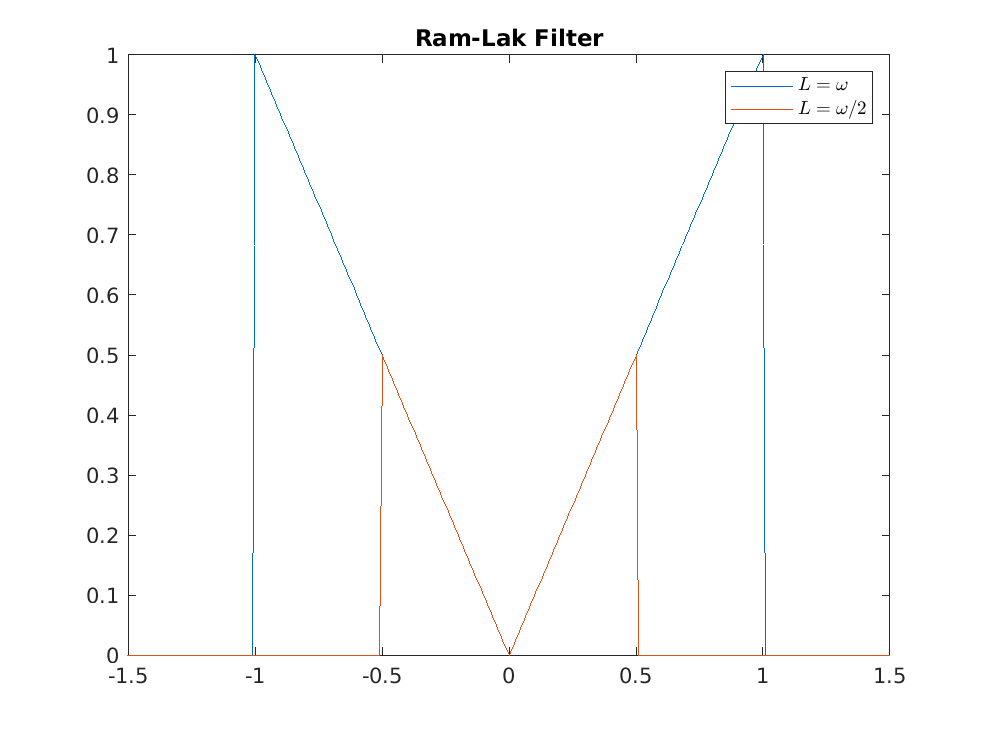
Part b
if runb == 1 S = repmat(phantom , [1 1 3] ); sigma = [0 1 5]; for i = 1:3 if i ~= 1 S(:,:,i) = imgaussfilt(S(:,:,1), sigma(i)); end figure; imshow(S(:,:,i)); title("S"+sigma(i)); end L =1; flt = "Ram-Lak"; rrmse_b = zeros(1,3); for i = 1:3 [sR(:,:,i),xp] = radon(S(:,:,i), theta); filtered = flt_bp(sR(:,:,i), xp, theta, L, flt, mx); rrmse_b(i) = rrmse(S(:,:,i), filtered); figure; imshow(filtered,[]); title("R"+sigma(i)); end disp("RRMSE Values:") disp("RRMSE sigma=0 :" + rrmse_b(1)) disp("RRMSE sigma=1 : "+ rrmse_b(2)) disp("RRMSE sigma=5 : "+ rrmse_b(3)) end %%%Justification
RRMSE Values: RRMSE sigma=0 :0.81561 RRMSE sigma=1 : 0.53153 RRMSE sigma=5 : 0.070787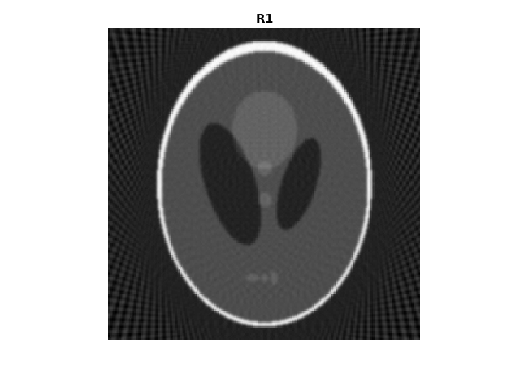 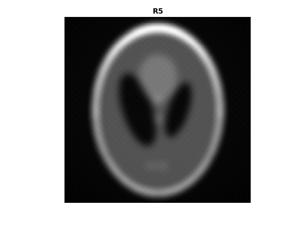
RRMSE is the highest for 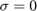 and lowest for 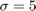.
As S0 is sharp it has higher frequencies and since the no of angles considered for projection are only 60, the filtered back-projection introduces many artifacts, which leads to higher artifacts.
Whereas for S5, it is highly blurred, which significantly reduces the higher frequency components in the Radon Transform, and reduces artifacts, which gives a better RRRMSE.
part c
if runc == 1 freq = ((length(xp):-1:1)/length(xp)); for i = 1:3 val = zeros(1,length(freq)); j = 0; for f = freq j = j +1; val(j) = rrmse(S(:,:,i),flt_bp(sR(:,:,i),xp,theta, f, "Ram-Lak", mx)); end figure('NumberTitle','Off','Name',"c. Plot for sigma =" + sigma(i)); plot(freq,val); xlabel("L"); ylabel("RRMSE"); title("Plot for sigma =" + sigma(i)); end end
Justification
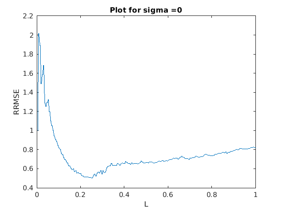 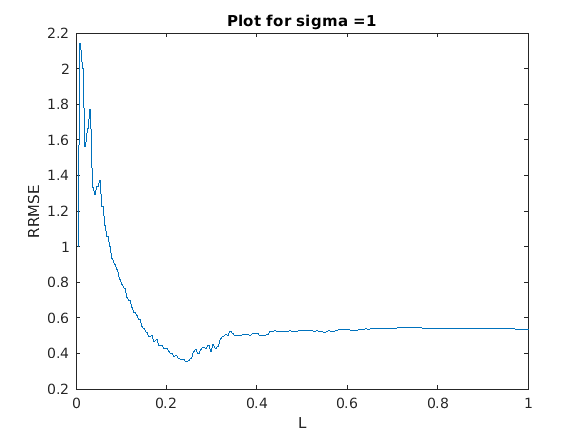 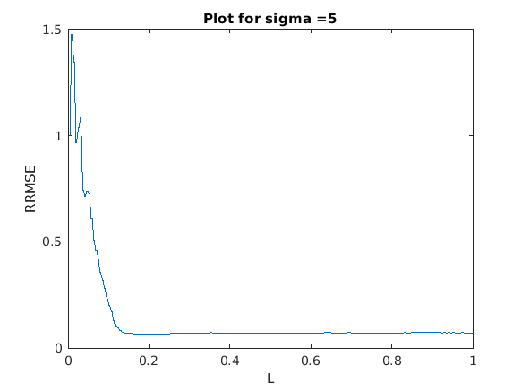For small values RRMSE is very high in all the three cases, as lower frequency components are insufficient in reconstructing the image.
The RRMSE reduces and reaches a minima as blurring reduces.
For R5 it remains almost constant with L
For R0 and R1 RRMSE increases with L due to artifacts introduces by very high frequencies
Minima(R5) < Minima(R1) < Minima(R0)
This is because the frequencies required to represent the image increase with increase in sharpness.
toc
Elapsed time is 36.735384 seconds.